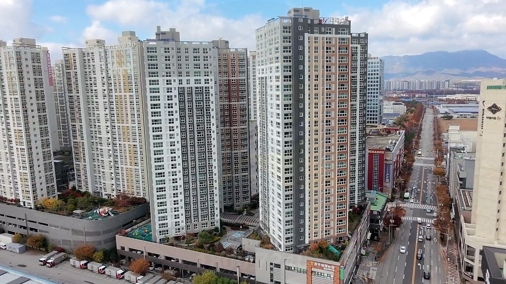
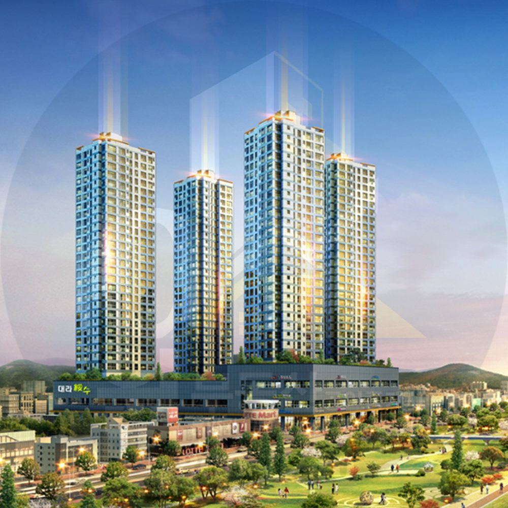
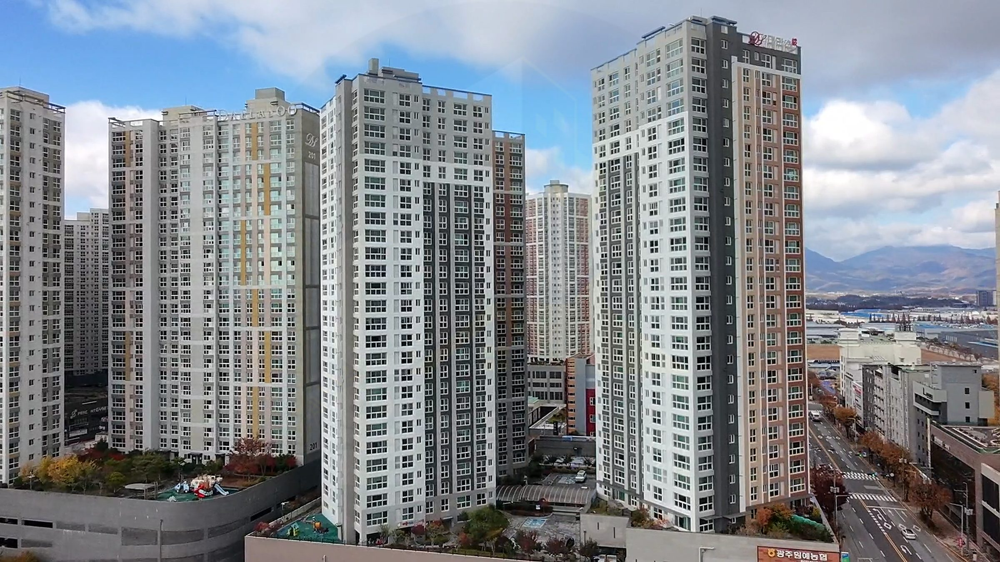
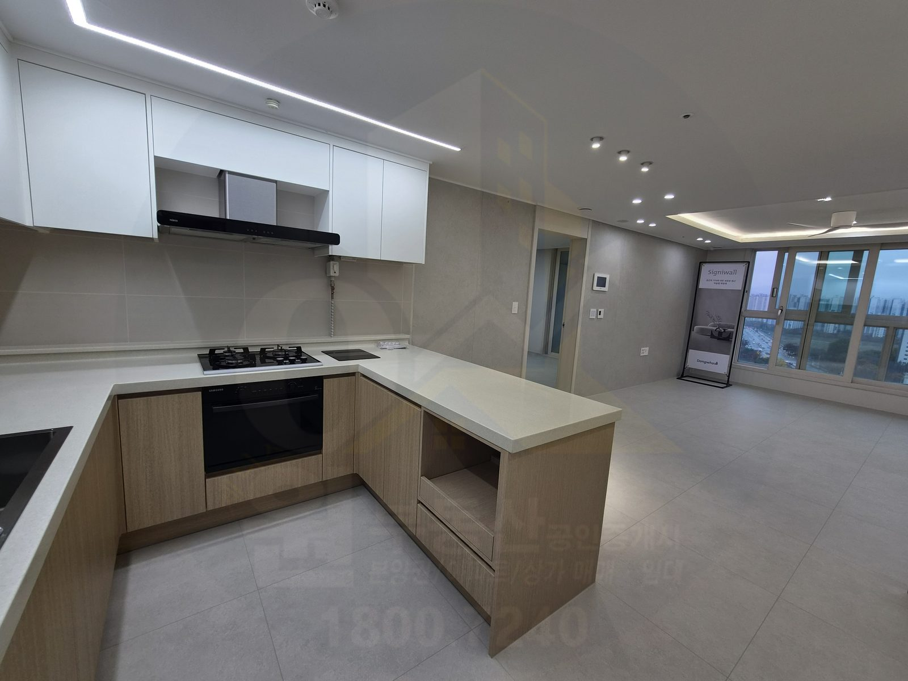
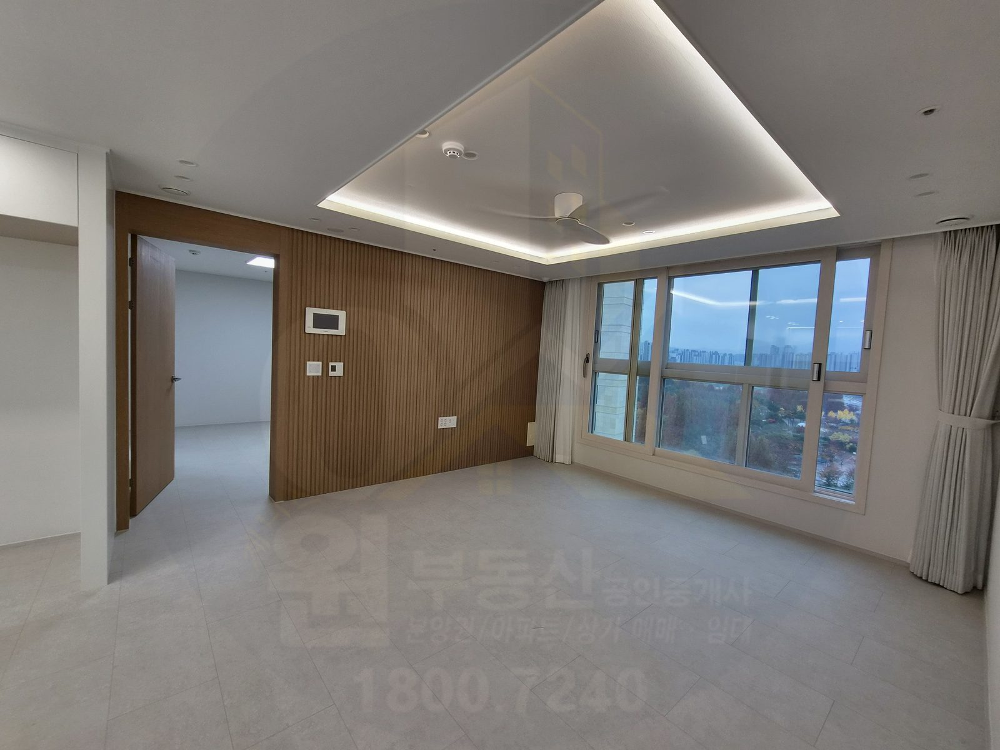
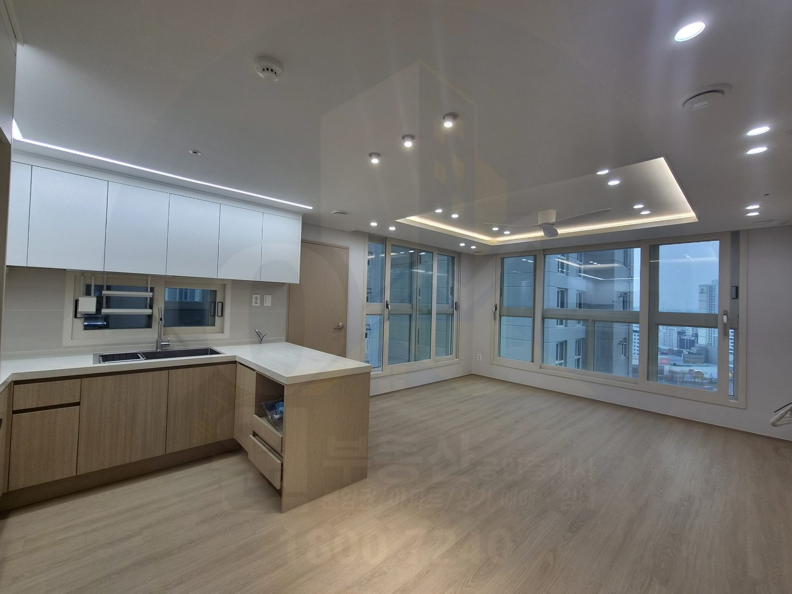

사업개요 줄 왼쪽 큰 사진을 3장 넘겨 보기로. ‹ › 단추 · 아래 점 · 손가락으로 밀기(휴대폰) · 키보드 ← →.



단지 전경 1 / 3

80A 주방

59A 거실

59B 거실
사업개요 첨단대라수1차
(표는 지금 그대로)
순서: ① sky001(하늘 사진) → ② 지금 사진(정사각형 투시도) → ③ sky002(하늘 사진). 자동으로 넘어가지 않고 누를 때만 넘어감(위 메인 슬라이드와 겹치지 않게). 사진 틀: 하늘 사진(16:9)에 맞춰 큰 칸 비율을 16:9 로 — 정사각형 투시도는 위아래가 조금 잘림. [크게 보기]는 지금처럼 확대 창에서 전체 사진(지금 사진의 큰 창과 같이 6장 넘겨 보기). 확정하면 site.json 사업개요 사진 목록에 넣고 단지 화면에 연결합니다.